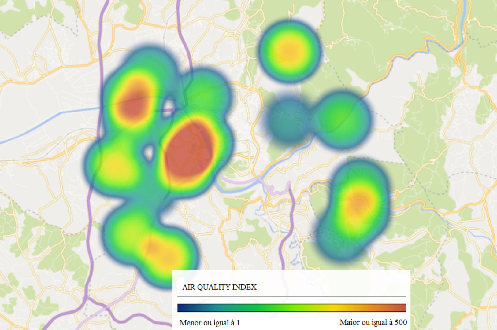

Air Quality Coimbra Map
This map used zolertia IOT devices attached in bicycles in the city of Coimbra to collect information of the air quality of the city. This was part of the proect of Internet of Thing from University of Coimbra in 2022.

By: João Vítor Sgotti Veiga & Sarah Tremoulet